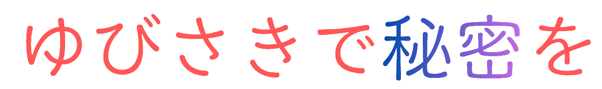

ヴェインとランスロットのとある５日間。
・ 毎日、書きたい言葉を選びます。
・ 指で画面をなぞって、手を離した時に１画とカウントされます。
・ 時間内に目標画数を書き終えると成功！
・ 選択肢や成功率でエンディングが変化。
・ 点は1画にカウントされません。
エンディングは全部で10種類。全部ハッピーエンドなのでご安心ください！
🔑 同じエンディングに到達すると「てのひらの鍵」が手に入り、未解放エンディングをアンロックできます。